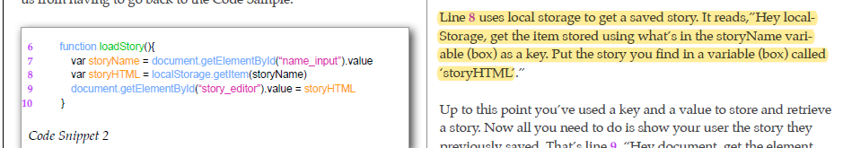
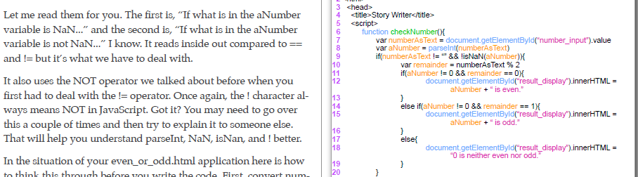
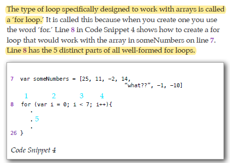
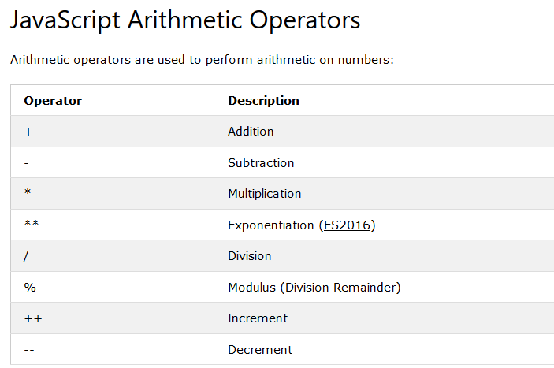
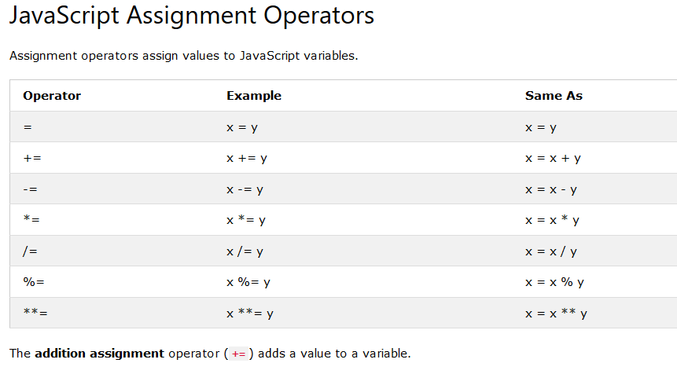
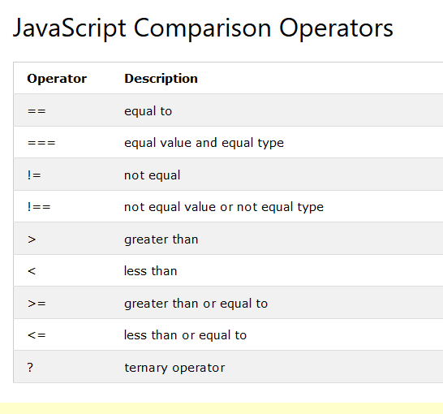
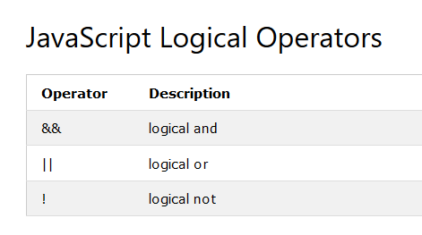
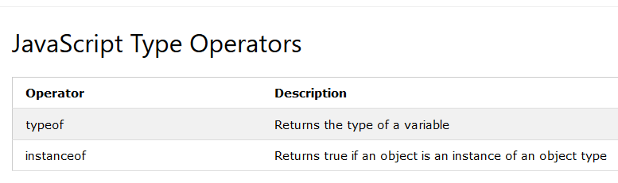
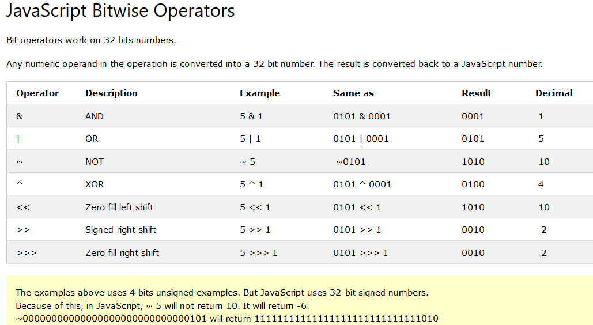
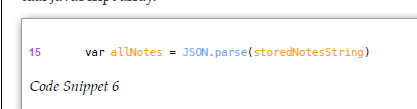

Notes Week 1
Javascript
Loops, Conditional Statements, Functions, Variables, Parameters, Arrays, Associative Arrays
>1. Functions and events: (p16 doing stuff)
P17 “The grammar of the JavaScript language, called ‘the syntax’ by techies, declares that functions all have the same structure. They have a name, stuff that goes into the function, stuff that comes out of the function, and stuff that makes up what the function does. For a pork sausage factory function the structure would be
- 1. a name - makePorkSausages,
- 2. stuff that goes in - pigs,
- 3. stuff that comes out - pork sausages, and
- 4. stuff that makes up what the factory does - chopping, filling, and a bunch of stuff no one really wants to know about.”
function theFunctionName(whatGoesIn)
Functions are what allow JavaScript to be used on website to become interactive.
2. Remembering User’s Info: (p35)
saveStory function p 43
p 44 “When you want to get the user’s input from any input or text area tag, you use the special word ‘value.’ When you want to show something to a user, you use a section (see Section 1) and the special word ‘innerHTML.’ So...if your dealing with an input or textarea use value; a section, use innerHTML. Don’t get these mixed up. If you do, your code will run without an error but your page won’t get or display anything. Be careful. You’ll just have to remember which word to use in these two different situations, input or textarea use value and section uses innerHTML.”
.value and innerHTMl at end of line will either get the info from input (.value) or show the user something (.innerHTML) KEY-VALUE PAIRS: The key idemtifies and the value is the info Example: key=Student name and value=grade,phone etc To get a story that is saved we use a “key” p.45

localStorage and then recalled with getItem setitem creates a new key/value pair
3. Making Choice p 46
If, else, else if
“w3schools”
A. Use the if statement to specify a block of JavaScript code to be executed if a condition is true. if (condition) { // block of code to be executed if the condition is true }
B. Use the else statement to specify a block of code to be executed if the condition is false. if (condition) { // block of code to be executed if the condition is true } else { // block of code to be executed if the condition is false }
C. Use the else statement to specify a block of code to be executed if the condition is false. if (condition) { // block of code to be executed if the condition is true } else { // block of code to be executed if the condition is false }
D. Use the else if statement to specify a new condition if the first condition is false. Syntax if (condition1) { // block of code to be executed if condition1 is true } else if (condition2) { // block of code to be executed if the condition1 is false and condition2 is true } else { // block of code to be executed if the condition1 is false and condition2 is false }
p.54
If something can be done some user or bunch of users will do it. If you and I don’t handle each situation our users can put us in then it will be us, not them, that look silly. Believe me, your life will be much simpler if you take care of as many of these situations as you can think of BEFORE you ship a product to your users.
- 1.Using null helps solve this problem
- 2.ParseInt: When you use JavaScript’s parseInt function you send in to it some text and it gives you back an integer
NaN p 56
Group and Loops: p. 65
1. Arrays = special object that hold key/value pairs, and the key is the index number. Index starts at 0
2. For loop p 66
The standard for loop parts when working with an array are:
- 1. the for keyword
- 2. a variable to keep track of the location you are at in the array,
- 3. a check to see if the loop should continue,
- 4. an update that increases the location tracking variable by one,
- 5. the lines of code to execute every time you go around the loop,
OPERATORS
W3schools.com
Visit W3School's Javascript tutorial     
newDate() p72
“The toLocaleString function that converted the date and time stamp to a string already knows where you are and if it is daylight savings time or not.”
JSON: literal syntax, not an object. p.74
 P74 “JSON (Javascript Object Notation). Basically, if the string wasn’t created by some pre-written JSON code, a JSON library in techie speak, or by a person who knows the standard very well, JSON.parse can’t understand the string and will fail. This means you have to be very careful if you are typing in the strings yourself. Thankfully, in JavaScript the JSON library has a way to create those strings for you. You’ll see how to do that when you get to line 21.”SEC 6 Representing Things p 91
An associative array p.92
associates a variable with an attribute list, the name of an associative array’s attribute its ‘key’
Adding *1 = p96 * 1’. “If you multiply the text the user enters by the number 1, JavaScript will convert the text to a number! That’s nice. I’ve seen a lot of other languages where it was a lot harder than that.”
REWIRING YOUR BRAIN VIDEOS SITEPOINT
In the videos about rewiring our brain, I think I have already done most of what was mentioned, and I believe most people nowadays know mobile devices aren’t going anywhere. Start Small and scale up, keep it simple. Design UX with users needs, keep in mind ease of use and easy to reach areas on a screen, “reachability” use an href to make a number into a way to call from the page, no more copy and paste numbers, reduce and optimize data and images. Overall I understand it is all about ease and usage designs.